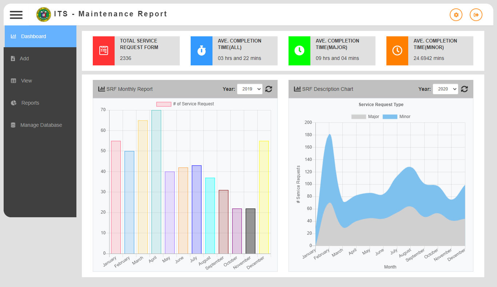
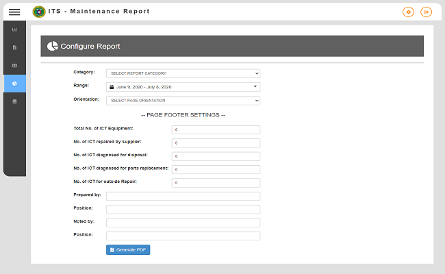
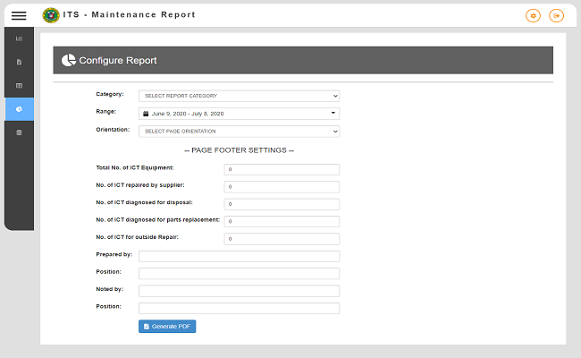

ITISD Maintenance Report
PHP HTML CSS JavaScript Bootstrap 4 MySQL Code Igniter Chart.JS TCPDF When: 2020
Contribution: Full Stack Developer
Description: A Web Application Developed in PHP Language, Designed with the help of Bootstrap and MySQL for its database. This Web App designed and developed to help Department of Health's KMITS-ITISD track their IT Servicing performances.
KMITS-ITISD(Knowledge Management and Information Techonology Services - Information Technology and Insfrastructure Division) can now track their IT Services performance conveniently and effectively by just gathering and encoding Service Requests Forms data into the system. The Web Application itself has a "Dashboard" which they can view a visual(in form of Bar and Point type of data Chart) of their Average Completion Time on specific type of IT Services(Major and Minor) and Monthly Total Services Through the years.
KMITS-ITISD Maintenance Report development follows agile best practices like a single coding standard to which all programmers adhere, simple design UI for Users so they can easily navigate the system, Test-Driven Development to elimnate all possible bugs and unwanted results, etc.

 

Creating ITISD-Maintenance
ITISD-Maintenance Encoding
The ITISD-Maintenance Encoding module is where the user will encode the Accomplished ITISD Service Request Forms into the Web Application, with a additional functions like giving unique SRF Control Number on each encoded data and the ITS Accomplishment Time Flow. This was obviously a hugely important part of the application.
These Encoded Data then will be used as materials for providing the user detailed information of the ITISD Servicing Performance through the Web Application's Dashboard and Monthly Maintenance Report.
ITISD-Maintenance Encoding
The ITISD-Maintenance Encoding module is where the user will encode the Accomplished ITISD Service Request Forms into the Web Application, with a additional functions like giving unique SRF Control Number on each encoded data and the ITS Accomplishment Time Flow. This was obviously a hugely important part of the application.
These Encoded Data then will be used as materials for providing the user detailed information of the ITISD Servicing Performance through the Web Application's Dashboard and Monthly Maintenance Report.
Monthly Maintenance Report
These module is created so the user can generate Monthly Maintenance Report(in the form of a PDF Document) based on the encoded SRF data into the system. They have the option if they want to generate a custom date range of report, or they can also generate Yearly Maintenance Report.
Using TCPDF Plugin, Creating a report on HTML made easy. Some detailed data comes from generating this report like the calculation of "Percentage of Availability" where the ITISD Admin can track their Servicing Performances.
Sample: Monthly Maintenance Report
Monthly Maintenance Report
These module is created so the user can generate Monthly Maintenance Report(in the form of a PDF Document) based on the encoded SRF data into the system. They have the option if they want to generate a custom date range of report, or they can also generate Yearly Maintenance Report.
Using TCPDF Plugin, Creating a report on HTML made easy. Some detailed data comes from generating this report like the calculation of "Percentage of Availability" where the ITISD Admin can track their Servicing Performances.
Sample: Monthly Maintenance Report
Accomplishment Time Calculation flow
The IT Servicing Accomplishment Time flow is where the application can calculate the accomplishment time on major services just relying on the given details(Date Received, Time Received, Date Released, Time Released) of the user. Calculating the ITS Accomplishment time on major servicing of ITISD(Information Technology and Servicing Division) is based from the date and time the service request is received to the date and time the service request is accomplished.
Calculating the ITS accomplishment time on major services has a certain criteria before giving the result. Those criteria's are the time on calculating the accomplishment time must not be outside the office hours of DOH Central Office which is from 8AM to 5PM only, and only form Working Days which is from Monday-Friday Only.
ITS Accomplishment Time Calculation flow
The IT Servicing Accomplishment Time flow is where the application can calculate the accomplishment time on major services just relying on the given details(Date Received, Time Received, Date Released, Time Released) of the user. Calculating the ITS Accomplishment time on major servicing of ITISD(Information Technology and Servicing Division) is based from the date and time the service request is received to the date and time the service request is accomplished.
Calculating the ITS accomplishment time on major services has a certain criteria before giving the result. Those criteria's are the time on calculating the accomplishment time must not be outside the office hours of DOH Central Office which is from 8AM to 5PM only, and only form Working Days which is from Monday-Friday Only.